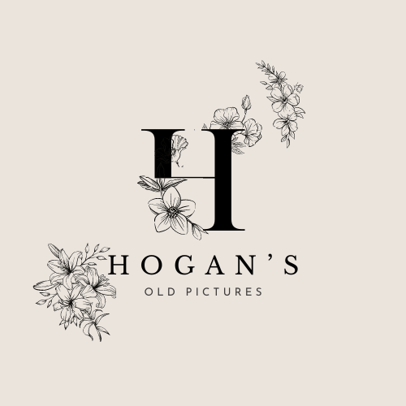

Welcome to Hogan's Old Paintings!
Hogans Old Pictures is a small, locally-owned company specializing in the recreation and restoration of classic paintings. The business is dedicated to bringing old masterpieces back to life by replicating famous works of art with incredible attention to detail and craftsmanship. Whether it's a cherished family portrait or a historical painting that needs revitalizing, Hogans Old Pictures focuses on preserving the original style, colors, and textures while ensuring that the artwork maintains its authenticity. With a team of skilled artists and restoration experts, Hogans Old Pictures prides itself on providing high-quality reproductions for art lovers and collectors. They use a combination of traditional techniques and modern technology to faithfully recreate pieces, often tailoring each painting to fit specific customer requests. Their services cater to both individuals and businesses looking to add a touch of historical art to their spaces. The company’s commitment to artistic excellence and customer satisfaction has earned it a strong reputation in the local community. Hogans Old Pictures not only values preserving the past but also making timeless art accessible to everyone.
Links to other pages: